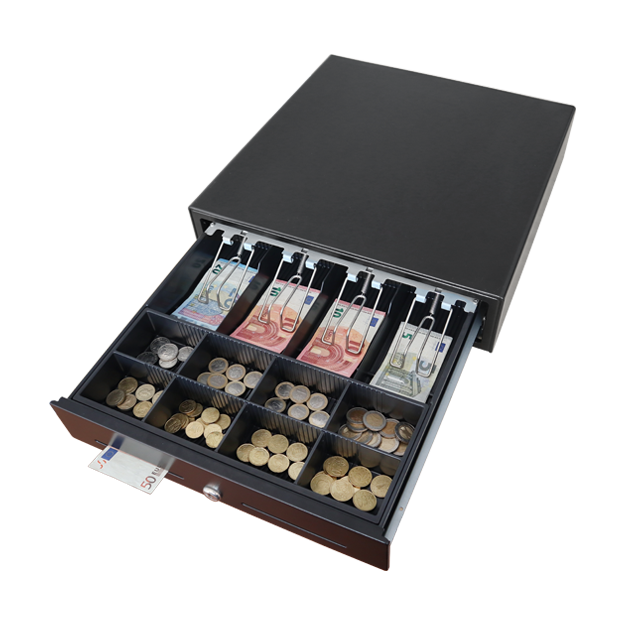

Xiamen, China - Leader POS, a leading developer of point-of-sale (POS) solutions, today announced the launch of its innovative cloud-based POS system.
The new system utilizes cutting-edge software and hardware to provide retailers and restaurants with an affordable, fully integrated solution for managing in-store transactions, customer data, inventory, and staff.
As a premier POS machine supplier, Leader POS has over 15 years of experience providing electronic cash registers and other POS products to thousands of customers across China and beyond. The company is committed to delivering high-quality, certified products that comply with ISO, CE, FCC, and BIS standards to ensure maximum safety, reliability, and performance.
“We are dedicated to helping our clients gain a competitive advantage through technology that enhances business operations and the customer experience,” said Wuyu(Andy) Huang, Founder and CEO of Leader POS. “Our latest cloud-based POS system leverages the power of the cloud to give businesses of all sizes a fast, smart and cost-effective solution for end-to-end management and growth.”
The robust features of the new Leader Cloud POS include: inventory management optimized for restaurants and retailers; customer relationship management tools; staff management including payroll and scheduling; powerful reporting with real-time insights; works on multiple devices from desktop to tablet; over-the-air software updates to easily maintain compliance; scalable, flexible pricing model based on features and volume.
With this launch, Leader POS continues its mission of delivering affordable yet powerful POS solutions to future-focused businesses around the world. The Leader Cloud POS is a fully integrated solution to optimize operations, gain data-driven clarity and drive new opportunities for innovation.
Xiamen, China - Leader POS, a leading developer of point-of-sale (POS) solutions, today announced the launch of its innovative cloud-based POS system.
For more information, please visit www.leader.com.cn.